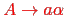
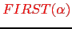
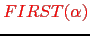
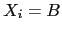
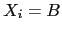
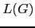
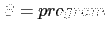
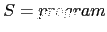
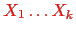
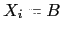

Sig: Recursión por la Izquierda Sup: Analizadores Descendentes Predictivos en Ant: Conceptos Básicos para el Con:
El árbol de análisis sintáctico abstracto es una representación compactada del árbol de análisis sintáctico concreto que contiene la misma información que éste.
Existen diferentes métodos de análisis sintáctico. La mayoría caen en una de dos categorías: ascendentes y descendentes. Los ascendentes construyen el árbol desde las hojas hacia la raíz. Los descendentes lo hacen en modo inverso. El que describiremos aqui es uno de los mas sencillos: se denomina método de análisis predictivo descendente recursivo.
A) reconocerá el lenguaje generado desde la variable
En este método se escribe una rutina A por variable sintáctica .
Se le da a la rutina asociada el mismo nombre que a la variable sintáctica
asociada.
La función de la rutina A asociada con la variable
es reconocer el lenguaje  generado por  .
.
La estrategia general que sigue la rutina A para reconocer
es decidir en términos del terminal en la entrada
que regla de producción concreta
 se aplica para
a continuación comprobar que la entrada que sigue pertenece al lenguaje generado por
se aplica para
a continuación comprobar que la entrada que sigue pertenece al lenguaje generado por
 .
.
En un analizador predictivo descendente recursivo (APDR) se asume que
el símbolo que actualmente
esta siendo observado (denotado habitualmente como
lookahead) permite determinar unívocamente
que producción de  hay que aplicar.
hay que aplicar.
Una vez que se ha determinado que la regla por la que continuar la derivación
es
 se procede a reconocer
,
el lenguaje generado por
se procede a reconocer
,
el lenguaje generado por  . Si
,
las apariciones de terminales
. Si
,
las apariciones de terminales  en
en  son emparejadas
con los terminales en la entrada mientras que las apariciones de variables 
en
son emparejadas
con los terminales en la entrada mientras que las apariciones de variables 
en  se traducen en llamadas a la correspondiente subrutina asociada con
se traducen en llamadas a la correspondiente subrutina asociada con B.
Para ilustrar el método, simplificaremos la gramática presentada en el ejercicio 7.1.1 eliminando las declaraciones:
La secuencia de llamadas cuando se procesa la entrada mediante el siguiente programa construye implícitamente el árbol de análisis sintáctico concreto.
parse = (input) ->
tokens = input.tokens()
lookahead = tokens.shift()
match = (t) ->
if lookahead.type is t
lookahead = tokens.shift()
lookahead = null if typeof lookahead is "undefined"
else # Error. Throw exception
throw "Syntax Error. Expected #{t} found '" +
lookahead.value + "' near '" +
input.substr(lookahead.from) + "'"
return
statements = ->
result = [statement()]
while lookahead and lookahead.type is ";"
match ";"
result.push statement()
(if result.length is 1 then result[0] else result)
statement = ->
result = null
if lookahead and lookahead.type is "ID"
left =
type: "ID"
value: lookahead.value
match "ID"
match "="
right = expression()
result =
type: "="
left: left
right: right
else if lookahead and lookahead.type is "P"
match "P"
right = expression()
result =
type: "P"
value: right
else # Error!
throw "Syntax Error. Expected identifier but found " +
(if lookahead then lookahead.value else "end of input") +
" near '#{input.substr(lookahead.from)}'"
result
expression = ->
result = term()
if lookahead and lookahead.type is "+"
match "+"
right = expression()
result =
type: "+"
left: result
right: right
result
term = ->
result = factor()
if lookahead and lookahead.type is "*"
match "*"
right = term()
result =
type: "*"
left: result
right: right
result
factor = ->
result = null
if lookahead.type is "NUM"
result =
type: "NUM"
value: lookahead.value
match "NUM"
else if lookahead.type is "ID"
result =
type: "ID"
value: lookahead.value
match "ID"
else if lookahead.type is "("
match "("
result = expression()
match ")"
else # Throw exception
throw "Syntax Error. Expected number or identifier or '(' but found " +
(if lookahead then lookahead.value else "end of input") +
" near '" + input.substr(lookahead.from) + "'"
result
tree = statements(input)
if lookahead?
throw "Syntax Error parsing statements. " +
"Expected 'end of input' and found '" +
input.substr(lookahead.from) + "'"
tree
var parse = function(input) {
var tokens = input.tokens();
var lookahead = tokens.shift();
var match = function(t) {
if (lookahead.type === t) {
lookahead = tokens.shift();
if (typeof lookahead === 'undefined') {
lookahead = null; // end of input
}
} else { // Error. Throw exception
throw "Syntax Error. Expected "+t+" found '"+lookahead.value+
"' near '"+input.substr(lookahead.from)+"'";
}
};
var statements = function() {
var result = [ statement() ];
while (lookahead && lookahead.type === ';') {
match(';');
result.push(statement());
}
return result.length === 1? result[0] : result;
};
var statement = function() {
var result = null;
if (lookahead && lookahead.type === 'ID') {
var left = { type: 'ID', value: lookahead.value };
match('ID');
match('=');
right = expression();
result = { type: '=', left: left, right: right };
} else if (lookahead && lookahead.type === 'P') {
match('P');
right = expression();
result = { type: 'P', value: right };
} else { // Error!
throw "Syntax Error. Expected identifier but found "+
(lookahead? lookahead.value : "end of input")+
" near '"+input.substr(lookahead.from)+"'";
}
return result;
};
var expression = function() {
var result = term();
if (lookahead && lookahead.type === '+') {
match('+');
var right = expression();
result = {type: '+', left: result, right: right};
}
return result;
};
var term = function() {
var result = factor();
if (lookahead && lookahead.type === '*') {
match('*');
var right = term();
result = {type: '*', left: result, right: right};
}
return result;
};
var factor = function() {
var result = null;
if (lookahead.type === 'NUM') {
result = {type: 'NUM', value: lookahead.value};
match('NUM');
}
else if (lookahead.type === 'ID') {
result = {type: 'ID', value: lookahead.value};
match('ID');
}
else if (lookahead.type === '(') {
match('(');
result = expression();
match(')');
} else { // Throw exception
throw "Syntax Error. Expected number or identifier or '(' but found "+
(lookahead? lookahead.value : "end of input")+
" near '"+input.substr(lookahead.from)+"'";
}
return result;
};
var tree = statements(input);
if (lookahead != null) {
throw "Syntax Error parsing statements. Expected end of input and found '"+
input.substr(lookahead.from)+"'";
}
return tree;
}
A,
el cuál está asociado con la variable , el símbolo terminal
que esta en la entrada determine de manera unívoca la regla
de producción
 que debe ser procesada.
Si se piensa, esta condición requiere que todas las partes derechas  de
las reglas
de
las reglas
 de
de  comiencen por diferentes símbolos.
Para formalizar esta idea, introduciremos el concepto de
conjunto
comiencen por diferentes símbolos.
Para formalizar esta idea, introduciremos el concepto de
conjunto
 :
:

donde:

Podemos reformular ahora nuestra afirmación anterior en estos términos:
Si
 y los conjuntos
 son
disjuntos podemos construir el procedimiento para la variable  siguiendo
este seudocódigo:
siguiendo
este seudocódigo:
A = function() {
if (lookahead in FIRST(gamma_1)) { imitar gamma_1 }
else if (lookahead in FIRST(gamma_2)) { imitar gamma_2 }
...
else (lookahead in FIRST(gamma_n)) { imitar gamma_n }
}
Donde si  es
es
 el código
el código gamma_j consiste
en una secuencia
 de llamadas de uno de estos dos tipos:
de llamadas de uno de estos dos tipos:
X_i si match(X_i) si